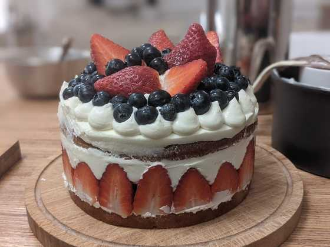
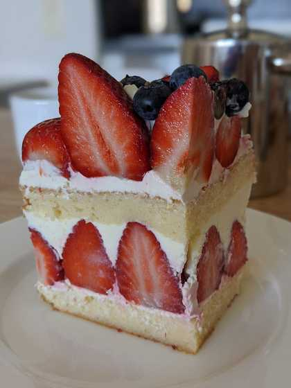
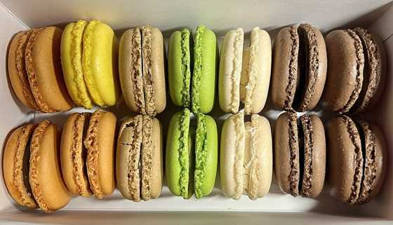
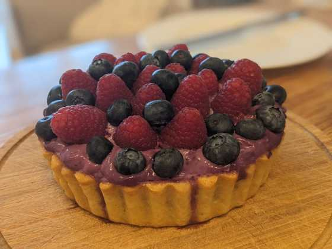
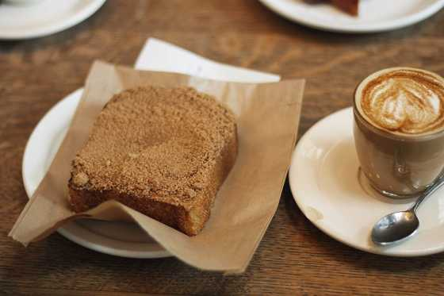
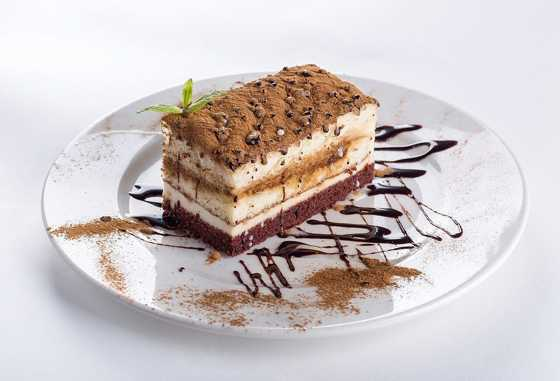

島根県益田市駅前町 ケーキと焼き菓子
その日焼いた分だけ、
売り切れたら、おしまい。
PAPIE.(パピエ)は、益田駅前にある小さなケーキと焼き菓子のお店です。
お店のこと
ケーキと焼き菓子を、昼から夕方まで。
PAPIE.は島根県益田市駅前町にあるケーキ店で、ケーキと焼き菓子(Cakes and baked goods)を扱っています。2021年10月27日にオープンしました。営業は12時から17時まで、売り切れ次第の閉店とされ、定休日は決まっておらず(不定休)、営業日はInstagramで案内されています。ウェディングケーキや、季節の品(いちごのパフェなど)の投稿も見られます。
お店の名前の由来や店主さんの想いは、確認できる公開情報が見つかりませんでした。「パピエ」はフランス語で紙を意味する言葉ですが、これがお店の名前の意味かどうかは確認できていないため、断定していません。このページの「売り切れたらおしまい」という言い回しは、営業時間の記載をもとにした制作側のイメージです。
情報源: Threads @papie.y / 食べログ(ジャンル:洋菓子) / hamoni / Instagram
掲載の写真は、ケーキや焼き菓子のイメージを伝えるフリー素材です。お店の実際の商品・店内・外観ではありません。









口コミ
お客様の声(イメージ例)
駅の近くで、気軽に立ち寄れるのがうれしいです。ケーキを選んでいる時間が楽しいです。
焼き菓子は日持ちするので、ちょっとした手みやげにも重宝しています。
お祝いのケーキをお願いしました。相談しやすい雰囲気で安心できました。
上の口コミは制作側が作成したイメージ例であり、実在のお客様の声ではありません。
アクセス
ご案内
| 所在地 | 〒698-0024 島根県益田市駅前町3-25 |
|---|---|
| 電話 | 準備中 |
| 営業時間 | 12:00〜17:00(売り切れ次第終了)※Threadsの記載より |
| 定休日 | 不定休(営業日はInstagramで案内) |
| SNS | Instagram @papie.y |
写真クレジット
使用した写真
全て Wikimedia Commons のフリー素材です。長辺1200px程度に縮小して使用しています。
- Strawberry tart by Kirti Poddar / Kirti Poddar / CC BY 2.0 / 撮影地: インド・ムンバイ(ファイル説明より) / 出典(images/tart-strawberry.jpg)
- Shortcake slice 2 / Shisma / CC BY 4.0 / 撮影地: 撮影地不明 / 出典(images/cake-shortcake-slice.jpg)
- Des macarons de chez Bouillet (mars 2023) / Benoît Prieur / CC0 1.0 / 撮影地: フランス・リヨン近郊(位置情報より) / 出典(images/macarons-box.jpg)
- Two rectangular financiers / Kikaineko / CC BY-SA 3.0 / 撮影地: 撮影地不明 / 出典(images/financier.jpg)
- Tart with strawberry and blueberries / Shisma / CC BY 4.0 / 撮影地: 撮影地不明 / 出典(images/tart-berry.jpg)
- Coffee and coffee cake (Unsplash) / Stephanie McCabe / CC0 1.0 / 撮影地: 米国カリフォルニア州レディング(位置情報より) / 出典(images/coffee-cake.jpg)
- Piece of chocolate cake on a white plate decorated with chocolate sauce / Daria Yakovleva / CC0 1.0 / 撮影地: 撮影地不明 / 出典(images/cake-plate.jpg)
- Eclair with a fork / Fran1812 / CC BY-SA 4.0 / 撮影地: 撮影地不明 / 出典(images/eclair-chocolate.jpg)
- Cheshire cupcakes / Katja Seaton (Katjaskupcakes) / CC BY 3.0 / 撮影地: 英国チェシャー(ファイル説明より) / 出典(images/cupcakes.jpg)
- Danish-butter-cookies-1032894 / sdnet01 / CC0 1.0 / 撮影地: 撮影地不明 / 出典(images/butter-cookies.jpg)
- Madeleines de Commercy / Bernard Leprêtre / CC BY-SA 2.5 / 撮影地: 撮影地不明 / 出典(images/madeleines.jpg)
- ツョートケーキ / Shisma / CC BY 4.0 / 撮影地: 撮影地不明 / 出典(images/cake-berry-whole.jpg)